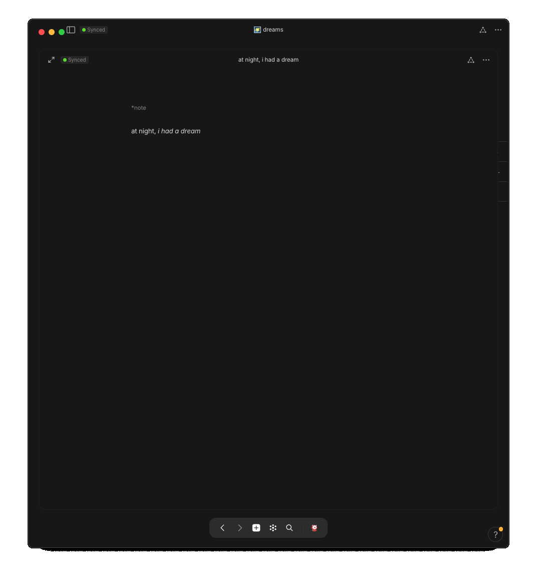

intro ~ lucid dreaming #
a lucid dream is when one gains awareness that they are dreaming ~ in that instant, they are transformed into their very own genie where what they wish, instantly becomes so 🧞‍♂️ how our mind perceives the reality of our dream-world is nearly identical to how it perceives our waking-life ~ both realities are practically indistinguishable to our senses ~ just as we wish to live the life of our dreams, we can actually live a life in our dreams ~

you often hear that we spend, or what's actually implied, waste, a third of our life sleeping ~ instead, if that time can be seen as an extension of life, another realm of living, one where time doesn't quite exist as linearly as it does in this fleshy-world, then that third of time becomes practically infinite time to live endless lives ~

the key to gaining access to that lucid world at night is again, to simply gain-awareness that you are dreaming ~ a trick to get you to that realization is to first remember your dreams + a trick to remembering your dreams is to journal them right as you wake up ~

as i've learned in life, if something isn't easy, you likely won't do it ~ so, unless you have a truly seamless system to journal the moment you awake while the dream is still freshest in your mind, the sparced instances of journalling won't ever materialize into a solidified habit ~ the process must be completely free of any daunts or resistence

a bed-side notebook + pen could make for a pleasant system if you enjoy physically writing, but unless they're put in arm's reach before you go to sleep or you don't have a bed-side light-source to you see the pages if you wake while it's still dark, you likely won't uphold the routine to turn this action into habit ~
a seamless [capturing] system #
unless you choose to consciously create a mental separation from your phone at night, since your phone is often in arm's reach at night + no additional light is needed to write, quickly unlocking your phone w/ one eye open, hard-pressing the anytype app-logo, tapping create note, and 2 seconds later, you have a blank black page to jot down all that you remember
you can also create a voice-recording for faster capturing of thoughts/memories that you can then later be transcribed
once captured, free from distractions, in your default object-type, you can now change the object-type to 🌠dream

⚛️ object 🌠dream journal #
💠change [object-]type
- from
👠object-view
🖇 relations #